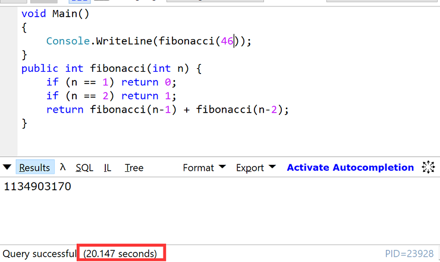
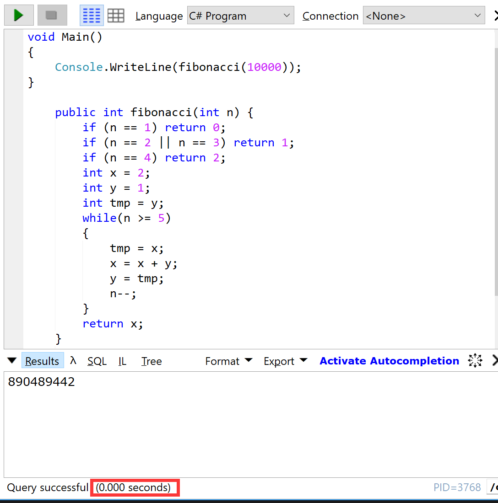

今天跟同事饭后压马路的时候，料到一个比较有趣的算法题，求 Fibonacci sequence。在一整讨论之后，想出来一个递归算法可以算出来结果。被告知虽然能够达到要求，但是运算时间太长。还能不能想出来一个更有效率的方法。回到办公桌，拿起笔运算了半天，终于归纳出来一个公式，可以更加有效的运算出Fibonacci sequence。心中大喜，赶紧写下整个分析的过程，免得时间一长就想不起来当初怎么算出来的公式。
问题描述
Find the Nth number in Fibonacci sequence.
A Fibonacci sequence is defined as follow:
The first two numbers are 0 and 1.
The i th number is the sum of i-1 th number and i-2 th number.
The first ten numbers in Fibonacci sequence is:
0, 1, 1, 2, 3, 5, 8, 13, 21, 34 …
Example
Given 1, return 0
Given 2, return 1
Given 10, return 34
Notice
The Nth fibonacci number won’t exceed the max value of signed 32-bit integer in the test cases.
第一种解决方案
在对Fibonacci sequence 进行分析之后，总结出来一个一个规律
1 | 按照要求，输入是从1开始，为了跟问题一致，数组也从1开始，不采用0作为起始位置 |
按照这个规律， 我考虑到，当 i >= 3 的情况，就是将整个公式一致分拆，到最后会落到a[1] 或者 a[2]上面，再全部加起来。
1 | a[i] = a[i-1] + a[i-2] |
这里的每一次运算，都可以将一个a[i] 分拆成为2个数字的和，即使a[i]=a[i-1]+a[i-2]， 这个操作可以一直分解到a[3]=a[2]+a[1]为止。这个非常适合用分治算法。所有可以用下面的算法来进行运算。
1 | public class Solution { |
初一开始，我还沾沾自喜的认为这个算法即优美，又快速，很快就被打了脸。这里既使用了栈作为存储空间，同时还嵌套这循环。时间复杂度和空间复杂度都不低。如果传入的值比较大，会造成high CPU问题，更严重的会造成stack overflow exception. 我这里做了一个简单的测试，输入值到46的时候，运算时间已经20.470秒了。这个效率是不能接收的。

方法改良
看着他的输出数列0, 1, 1, 2, 3, 5, 8, 13, 21, 34 …，我深信这其中一定又规律可言。对上面的公式进行了进一步的分解。由于公式 a[i] = a[i-1] + a[i-2]构成， 我的直觉告诉我，这必然存在这某种联系。
1 | a[i] = a[i-1] + a[i-2] |
只要一直经行因式分解，最后必然能够分解到 a[i] = x a[2] + y a[1], 这里面最关键的就是搞清楚 x 和 y 的关系。我对这些变量进行了变换
1 | a = a[i-1]; |
简化之后，可以看到a’和b’的系数 x 与 y 存在某种关系。当前的x是上一次运算结果的x+y的结果， y则是上一次x的值。
1 | 例如第一次运算的时候 ： |
按照这个总结出来的规律
1 | x' = x + y; |
考虑到这个规律在a[5] 以上才稳定下来, 代码定义如下
1 | public int fibonacci(int n) { |
结果
这个代码在本地进行测试的时候，即使是输入10000这种大数值，也可以很快的出来结果。
